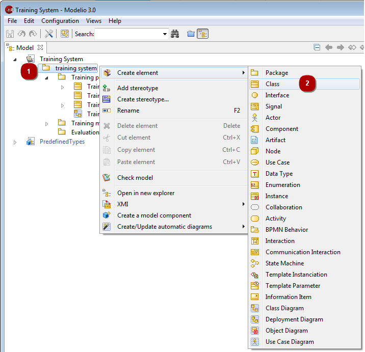

In the explorer and diagram edition views, you can create model elements using the “Create an element” command.

Note: The elements you can create vary according to what kind of element you have selected. Available elements are organized into groups of similar or related elements, so as to make it easier for you to find the element you want to create.